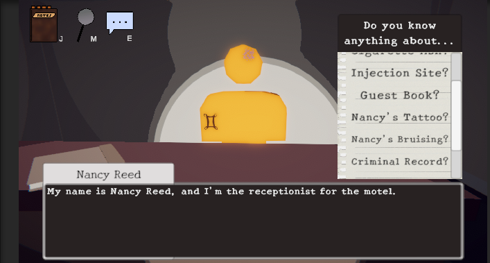
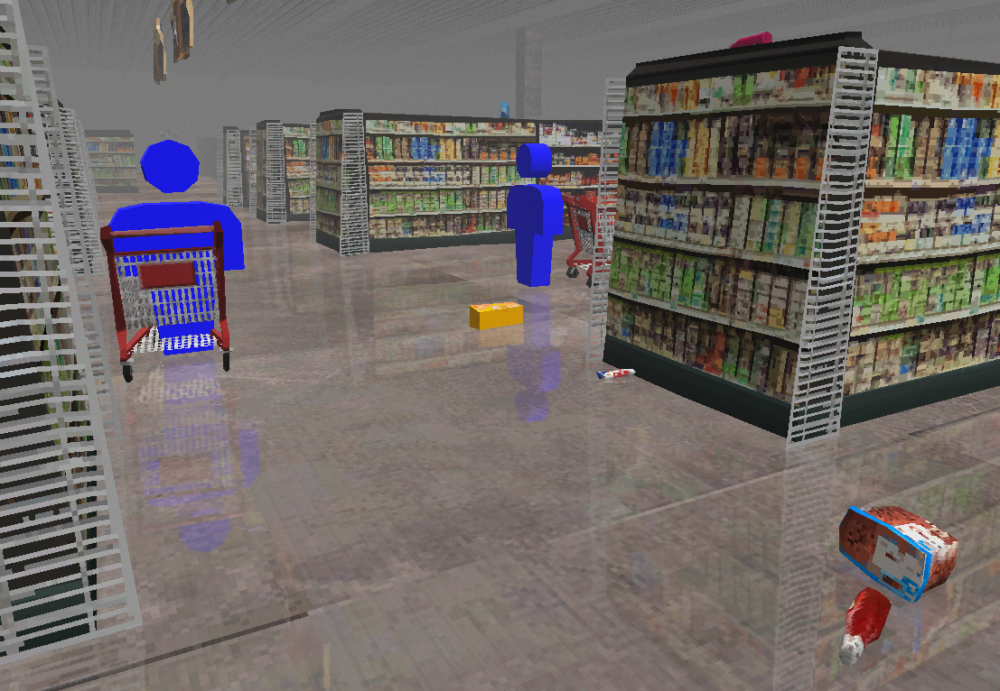
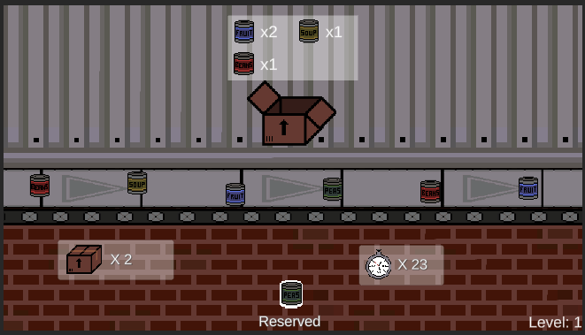

Mystery At The Murder Motel
 Murder Motel is an especially unique project, as it was created as the final project for a design patterns course, and implements eight different design patterns in its various systems. The player scans clues, consults a dynamic journal, questions NPCs, and tries to uncover the identity of a murderer. Three of my classmates and I made the game in about a month.
Shopping Cart Speedrun
 Shopping Cart Speedrun was made by myself and three classmates for a design patterns course. The game contains 5 design patterns and was made in a month. The player must race against NPCs to get all of the items on their randomly generated shopping list. They may ram, bump, and steal from NPCs to win.
Food Bank Frenzy
 Food Bank Frenzy was made by myself and four classmates over the course of about a month for a game programming course. We made the game around the theme of encouraging people to do good in their community. The player drags colored cans to the corresponding box off of an increasingly faster conveyer belt. In addition to programming, I made the pixel art for this game.